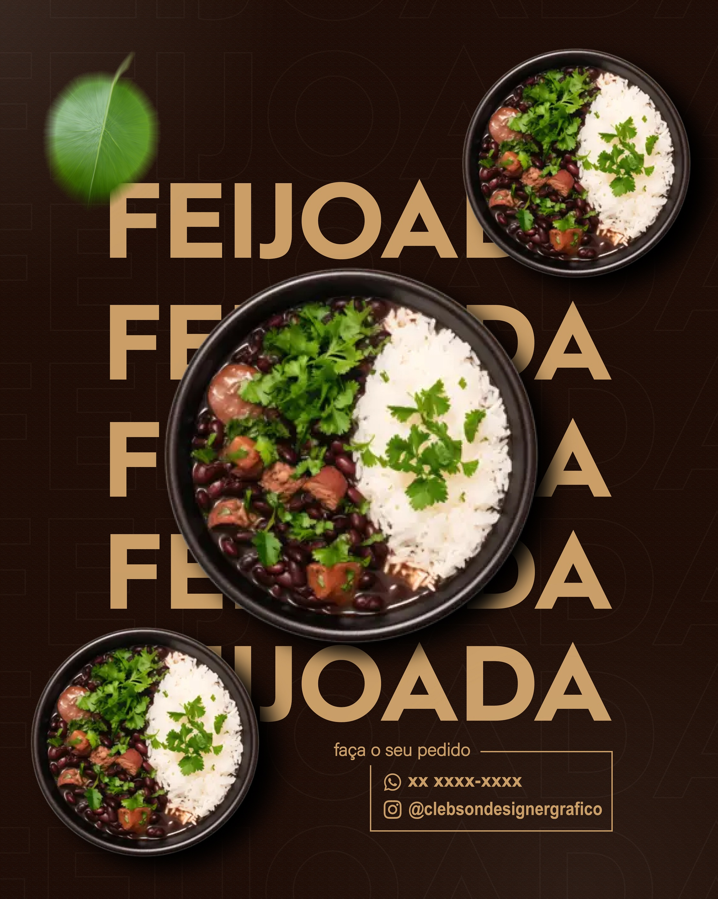

Designer Gráfico para Restaurante – Artes Profissionais para Divulgação e Promoções
Se você tem um restaurante e deseja atrair mais clientes pelas redes sociais, investir em design profissional é essencial. Desenvolvo artes estratégicas para restaurantes que querem fortalecer sua presença digital, divulgar promoções e destacar seus pratos.

Uma comunicação visual bem planejada valoriza seu cardápio, transmite profissionalismo e influencia diretamente na decisão do cliente. No Instagram e no WhatsApp, a imagem é o primeiro contato com o público, e um design bem feito pode aumentar significativamente o engajamento e as vendas.
Artes Promocionais para Restaurante
Crio artes personalizadas para divulgar prato do dia, almoço executivo, rodízio, buffet, promoção de fim de semana, eventos especiais e datas comemorativas. Cada peça é desenvolvida com foco em impacto visual, organização das informações e destaque estratégico para preços, horários e diferenciais.
O objetivo é chamar atenção no feed e despertar o desejo no cliente.
Flyer Digital e Material Impresso
Produzo flyer digital para Instagram e WhatsApp, além de versões prontas para impressão. Também desenvolvo banner promocional, cardápio digital, artes para fachada e materiais gráficos personalizados.
Um material visual profissional melhora a percepção da qualidade do seu restaurante.
Design para Redes Sociais de Restaurante
O Instagram funciona como vitrine digital. Desenvolvo artes padronizadas para manter identidade visual consistente, utilizando cores, tipografia e estilo alinhados à proposta do seu restaurante.
Um perfil organizado transmite mais confiança, fortalece a marca e gera maior engajamento.
Vetorização de Logomarca
Se sua logomarca está em baixa qualidade, realizo vetorização profissional para garantir nitidez em cardápios, uniformes, fachadas, embalagens e redes sociais.
Uma logo vetorizada pode ser ampliada sem perder qualidade.
Por que investir em design profissional para restaurante?
O cliente decide rapidamente onde vai almoçar ou jantar. Artes amadoras podem transmitir desorganização. Já um design estratégico aumenta a percepção de qualidade, profissionalismo e autoridade.
Restaurantes que investem em comunicação visual se destacam da concorrência e fortalecem sua marca no mercado local.
Como funciona o processo de criação
1. Entendimento do público e objetivo
Analiso o perfil do seu público, estilo do restaurante e objetivo da campanha, seja divulgar promoções, novos pratos ou eventos especiais.
2. Planejamento visual estratégico
Organizo informações como preços, horários, diferenciais e chamadas promocionais com hierarquia visual clara e profissional.
3. Criação personalizada
Desenvolvo uma arte exclusiva com foco em impacto visual, valorizando seus pratos e criando uma apresentação atrativa.
4. Ajustes e entrega final
Após aprovação, realizo ajustes necessários e entrego o material pronto para redes sociais ou impressão.
Perguntas Frequentes (FAQ)
Você cria artes exclusivas para meu restaurante?
Sim. Todas as artes são personalizadas conforme a identidade e proposta do seu restaurante.
Você faz apenas artes para Instagram?
Não. Também desenvolvo flyer digital, banner promocional, cardápio, materiais gráficos e vetorização de logomarca.
Posso solicitar alterações?
Sim. Ajustes fazem parte do processo para garantir que o resultado final fique ideal.
Quanto tempo demora para entregar?
O prazo varia conforme o projeto, mas sempre trabalho com agilidade e compromisso.
O que preciso enviar para iniciar o projeto?
Envie sua logomarca (se tiver), informações da promoção ou prato, preços, horários, endereço e referências visuais.
Qual é o horário de atendimento?
Atendo de segunda a sábado, com suporte e respostas rápidas até às 22h.
Você atende fora do horário comercial?
Sim. O atendimento é realizado até às 22h, permitindo contato mesmo após o horário comercial tradicional.
O design realmente ajuda a aumentar as vendas do restaurante?
Sim. Um design profissional aumenta a percepção de qualidade, chama mais atenção nas redes sociais e influencia diretamente na decisão do cliente. Artes bem estruturadas destacam promoções, pratos e diferenciais do seu restaurante, aumentando o engajamento e as chances de conversão.
Solicite sua Arte para Restaurante
Se você quer divulgar seu restaurante com artes profissionais para redes sociais, flyer, banner ou vetorização de logomarca, entre em contato agora mesmo e solicite seu orçamento personalizado.
Explore outros exemplos das minhas artes: Arte Esportiva, Arte para pizzaria e Arte para padaria